HomeCare for COVID 19
Who qualifies for HomeCare ?
Why HomeCare ?
Most common symptoms of COVID
What to do if not sure yet?
When to get tested?
Who qualifies for HomeCare?
What is Home Care?
Who qualifies for Home Care?
Why Home Care?
Most common symptoms
What to do if not sure?
Rules of Thumb
Getting Prepared
Washing Hands
Using Masks
Cleaning the house
Food and Utensils
Clothing and Personal Items
Symptoms Management
Is the patient cured?
2020 Covid Home Care
Contact Us
HomeCare guide may be used by people who meet one or more of the following criteria:
1. COVID-19 positive patients with mild symptoms and no other complications
2. People who are experiencing flu-like or common cold-like symptoms and suspect that they have COVID-19 but have not been tested yet
3. People who have come in contact with a COVID-19 positive patient and not experiencing any symptoms
1. COVID-19 positive patients with mild symptoms and no other complications
2. People who are experiencing flu-like or common cold-like symptoms and suspect that they have COVID-19 but have not been tested yet
3. People who have come in contact with a COVID-19 positive patient and not experiencing any symptoms
HomeCare enables you to take care of COVID-19 patient with mild symptoms and no other complications right at home. This guide will help you to
1. Maintain isolation and hygeine at home
2. Monitor the patient and provide symptomatic treatment
3. Help patient with day to day task and keep them cheerful
1. Maintain isolation and hygeine at home
2. Monitor the patient and provide symptomatic treatment
3. Help patient with day to day task and keep them cheerful
If you have just begun to experience one or two mild symptoms and are not yet sure of whether you should get tested for COVID-19, consider practicing the same home-isolation measures as those for a COVID positive patient.
A little measure of precaution from your end could go a long way in limiting the spread to other members of your family and the larger community.
A little measure of precaution from your end could go a long way in limiting the spread to other members of your family and the larger community.
If your symptoms persist or you experience that they are worsening, you would need to get tested and alert your district authorities. The state/UT COVID helpline numbers are given below:
https://www.mohfw.gov.in/pdf/coronvavirushelplinenumber.pdf
https://www.mohfw.gov.in/pdf/coronvavirushelplinenumber.pdf
It is safer
A hospital can be a hotbed of infections. Therefore, Home Care can be safer for patients with mild symptoms, those who are not yet sure of being infected and also their family members.
A hospital can be a hotbed of infections. Therefore, Home Care can be safer for patients with mild symptoms, those who are not yet sure of being infected and also their family members.
Fever
Dry Cough
Running Nose
Dizziness
Vomiting
Tiredness
Sore Throat
Diarrhoea
It gives quicker access
With the rapid spread of COVID-19, the hospitals are running out of capacity to hospitalize patients. HomeCare means the patients can receive the care they need even when a hospital bed is not available.
With the rapid spread of COVID-19, the hospitals are running out of capacity to hospitalize patients. HomeCare means the patients can receive the care they need even when a hospital bed is not available.
It is the right thing to do
Our doctors, nurses and hospital staff are overstretched. If those who don't need their services stay at home, then the hospital beds can be made available to those who need them the most.
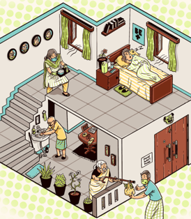
Our doctors, nurses and hospital staff are overstretched. If those who don't need their services stay at home, then the hospital beds can be made available to those who need them the most.
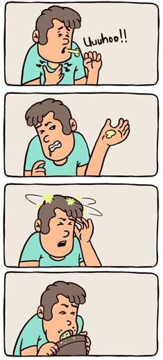
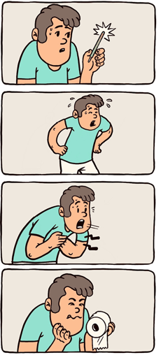
A qualified healthcare professional is the best judge of deciding if a patient should be prescribed home care. Typically, however, patients with following symptoms can be advised home care:
1. Age < 60 years
2. No history of cardiovascular disease, hypertension,
diabetes, chronic lung, kidney or liver disease, and other immunocompromised states
3. Low grade fever i.e. temperature lower than 100.4F
4. Respiration rate lower than 24 breaths/minute
1. Age < 60 years
2. No history of cardiovascular disease, hypertension,
diabetes, chronic lung, kidney or liver disease, and other immunocompromised states
3. Low grade fever i.e. temperature lower than 100.4F
4. Respiration rate lower than 24 breaths/minute
5. Cough (with or without sputum), nasal congestion or runny nose, and/or sore throat without shortness of breath
6. Loss of appetite
7. Diarrhoea, nausea, and vomiting
8. No feeling of confusion and/or drowsiness
In addition, HomeCare is typically advised only to the patients who:
1. Are able to isolate from other family members at home, so as to minimize the risk of infection to the other family members
2. Have a healthy family member at home to serve as the designated caregiver
6. Loss of appetite
7. Diarrhoea, nausea, and vomiting
8. No feeling of confusion and/or drowsiness
In addition, HomeCare is typically advised only to the patients who:
1. Are able to isolate from other family members at home, so as to minimize the risk of infection to the other family members
2. Have a healthy family member at home to serve as the designated caregiver
Rules of Thumb
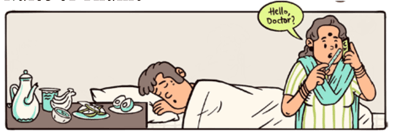
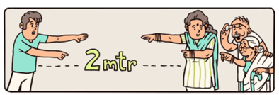
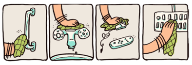

1. Contact doctor immediately if patient develops any of the emergency signs. The patient needs rest, nutritious food and has to drink water regularly.
3. Anything that the patient has touched can be infected. Clean high touch surfaces like door handles, bathroom taps and electronic devices after patient touches them.
4. Wash hands frequently with soap and water for atleast 20 seconds. Avoid touching your face.
2. All family members should stay atleast 2 metres away from the patient. If possible, the patient should have separate room and bathroom.
Getting Prepared
Washing Hands
Using Masks
Cleaning the House
Handling Utensils and Cooking
Washing Clothes
Symptom Management
Is the patient cured ?
Click here to download the Monitoring Chart
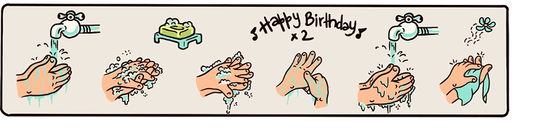
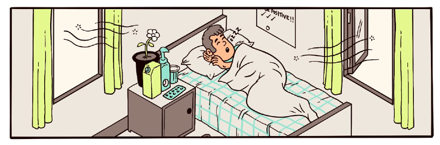
1. Self Isolation
Neither the patient nor any of the family members should leave the house, even if a lockdown is not imposed in the area. This is called “Self-isolation”.
Everyone must stay at home except to get medical care.
Do not go out to buy food or collect medicine – order them by phone or online, or ask someone else to drop them off at your home.
Do not allow any visitors, such as friends and family who don’t live there, in your home.
Neither the patient nor any of the family members should leave the house, even if a lockdown is not imposed in the area. This is called “Self-isolation”.
Everyone must stay at home except to get medical care.
Do not go out to buy food or collect medicine – order them by phone or online, or ask someone else to drop them off at your home.
Do not allow any visitors, such as friends and family who don’t live there, in your home.
2. Decide on a caregiver
Designate only one family member (caregiver) to take care of the patient’s needs. Ideally, the caregiver should be in good health and not have any medical conditions that would make them vulnerable to severe complications of COVID-19.
The designated caregiver should take extra precautions to prevent spreading of infection to other family members.
All other family members should avoid all unnecessary contact with the patient (except in the case of breast- feeding).
Designate only one family member (caregiver) to take care of the patient’s needs. Ideally, the caregiver should be in good health and not have any medical conditions that would make them vulnerable to severe complications of COVID-19.
The designated caregiver should take extra precautions to prevent spreading of infection to other family members.
All other family members should avoid all unnecessary contact with the patient (except in the case of breast- feeding).
3. Setup your home
Patient’s Room
1. Place the patient in a well ventilated single room (with open windows).
2. Limit the movement of the patient in the house and minimize shared space. If there are shared spaces (like a bathroom), then ensure that they are well ventilated (keep windows open) and cleaned and disinfected each time after the patient uses that space.
Bathroom
1. If possible, the patient should have a dedicated toilet and bathroom.
2. If a separate bathroom is not available, the patient should thoroughly clean the bathroom themselves after every use.
3. All family members should wash their hands thoroughly after using the bathroom.
4. The bathroom must be cleaned thoroughly at least once a day
5. Additionally, the patient can disinfect the toilet seat, taps, shower knobs, flush etc. after every use.
6. Ensure that the patient uses separate hand and bath towels from the rest of the household members.
Patient’s Room
1. Place the patient in a well ventilated single room (with open windows).
2. Limit the movement of the patient in the house and minimize shared space. If there are shared spaces (like a bathroom), then ensure that they are well ventilated (keep windows open) and cleaned and disinfected each time after the patient uses that space.
Bathroom
1. If possible, the patient should have a dedicated toilet and bathroom.
2. If a separate bathroom is not available, the patient should thoroughly clean the bathroom themselves after every use.
3. All family members should wash their hands thoroughly after using the bathroom.
4. The bathroom must be cleaned thoroughly at least once a day
5. Additionally, the patient can disinfect the toilet seat, taps, shower knobs, flush etc. after every use.
6. Ensure that the patient uses separate hand and bath towels from the rest of the household members.
4. High Risk Family Members
Patients aged over 60 years or with health conditions like
1. Heart disease incl. Hypertension (high blood pressure)
2. Diabetes and other immunocompromised states
3. Cancer
4. Respiratory (lung) disease
are at high risk of deceloping serious complications of COVID-19. Therefore special care must be taken to isolate them from both patient and the caregiver.
All other family members (including those who don’t have any symptoms) should keep atleast 2 meters away from high-risk family members
If possible, high-risk family members should sleep in a separate bed and use a separate bathroom
If a separate bathroom is not available, the high risk persons should use the bathroom first before the rest of the household
High-risk person’s towels, clothing and utensils should be separate from all other family members
If it is difficult to isolate high-risk family members, consider requesting to move the patient to an isolation facility, instead of caring at home
Patients aged over 60 years or with health conditions like
1. Heart disease incl. Hypertension (high blood pressure)
2. Diabetes and other immunocompromised states
3. Cancer
4. Respiratory (lung) disease
are at high risk of deceloping serious complications of COVID-19. Therefore special care must be taken to isolate them from both patient and the caregiver.
All other family members (including those who don’t have any symptoms) should keep atleast 2 meters away from high-risk family members
If possible, high-risk family members should sleep in a separate bed and use a separate bathroom
If a separate bathroom is not available, the high risk persons should use the bathroom first before the rest of the household
High-risk person’s towels, clothing and utensils should be separate from all other family members
If it is difficult to isolate high-risk family members, consider requesting to move the patient to an isolation facility, instead of caring at home
How to wash your hands
1. Wet hands with clean, running water. Turn off the tap.
2. Lather your hands together by rubbing them together with soap.
3. Lather the back of your hands, between your fingers and under your nails.
4. Scrub your hands for atleast 20 seconds. You can hum the whole “Happy Birthday” song as timer
Definitely wash your hands at the following times:
1. After blowing your nose, coughing or sneezing
2. Before and after preparing food
3. After using the toilet
4. After touching or playing with pets
5. Whenever your hands look dirty
6. After cleaning the house
7. After touching surfaces/items the patient may have touched
8. After returning from outside the house
If the patient has a need to interact with a family member other than the caregiver, then the patient must wash hands first put on the mask and only then come out of the isolation room.
The caregiver should wash hands thoroughly after every interaction with the patient
1. Wet hands with clean, running water. Turn off the tap.
2. Lather your hands together by rubbing them together with soap.
3. Lather the back of your hands, between your fingers and under your nails.
4. Scrub your hands for atleast 20 seconds. You can hum the whole “Happy Birthday” song as timer
Definitely wash your hands at the following times:
1. After blowing your nose, coughing or sneezing
2. Before and after preparing food
3. After using the toilet
4. After touching or playing with pets
5. Whenever your hands look dirty
6. After cleaning the house
7. After touching surfaces/items the patient may have touched
8. After returning from outside the house
If the patient has a need to interact with a family member other than the caregiver, then the patient must wash hands first put on the mask and only then come out of the isolation room.
The caregiver should wash hands thoroughly after every interaction with the patient
The patient should use a mask at all times.
The caregiver and other family members should use a mask whenever they are in the same room as the patient or while doing the patient’s laundry
The caregiver and other family members should use a mask whenever they are in the same room as the patient or while doing the patient’s laundry
Masks should not be touched while wearing it. Touching or adjusting the mask while wearing can make the mask ineffective.
If a disposable mask gets dirty or wet, it must be replaced immediately. Disposable masks cannot be reused.
Reusable masks should be washed using detergent daily, or immediately after they get dirty or wet.
If a mask is not available, the patient should cover the mouth and nose with disposable tissue while coughing or sneezing, and then discard the tissue immediately. If tissues are not available, then a fresh handkerchief may be used, however, the handkerchief must be soaked in detergent water immediately after every single use, and washed and dried at the end of the day.
If a disposable mask gets dirty or wet, it must be replaced immediately. Disposable masks cannot be reused.
Reusable masks should be washed using detergent daily, or immediately after they get dirty or wet.
If a mask is not available, the patient should cover the mouth and nose with disposable tissue while coughing or sneezing, and then discard the tissue immediately. If tissues are not available, then a fresh handkerchief may be used, however, the handkerchief must be soaked in detergent water immediately after every single use, and washed and dried at the end of the day.
1. Wear a mask and put on your gloves. Remember to not touch your face and eyes during the whole process.
2. Mix a disinfectant with water (e.g. Lysol / Phenyl) as directed on the packaging. You can also use household bleaching powder by mixing 4 teaspoons of bleach per litre of water.
3. Keep the windows open for ventilation.
4. Soak a cloth in the disinfectant solution (from step 2) and wipe all frequently touched areas.
5. Mop the floor with the disinfectant solution (from step 2)
6. Remove your gloves and wash your hands carefully.
7. Take a shower and change your clothes immediately after cleaning your house.
Clean frequently touched surfaces at least once a day.
E.g. Tables, doorknobs, light switches, countertops, handles, desks, toilets, faucets, sinks, etc.
Waste from the patient’s room may cause infection.
It should be packed separately in double garbage bags. Ensure that the waste is fully dry (keep it for 48 hours before disposal).
2. Mix a disinfectant with water (e.g. Lysol / Phenyl) as directed on the packaging. You can also use household bleaching powder by mixing 4 teaspoons of bleach per litre of water.
3. Keep the windows open for ventilation.
4. Soak a cloth in the disinfectant solution (from step 2) and wipe all frequently touched areas.
5. Mop the floor with the disinfectant solution (from step 2)
6. Remove your gloves and wash your hands carefully.
7. Take a shower and change your clothes immediately after cleaning your house.
Clean frequently touched surfaces at least once a day.
E.g. Tables, doorknobs, light switches, countertops, handles, desks, toilets, faucets, sinks, etc.
Waste from the patient’s room may cause infection.
It should be packed separately in double garbage bags. Ensure that the waste is fully dry (keep it for 48 hours before disposal).
How to clean utensils and self?
1. Use separate utensils (bottles, glasses, plates, spoons, etc.) for the patient and wash them separately.
2. Use gloves while handling the utensils used by the patient.
3. Wash the utensils used by the patient with soap and water immediately after use.
4. Wash hands properly after handling the patient’s utensils and food.
What to eat?
1. It is important for the patient to stay hydrated and have a healthy balanced diet so that their immune system can fight the disease
2. The patient should drink plenty of fluids (like clean water, fruit juices like orange/lemon juice without added sugar, soups, rasam, etc.)
1. Use separate utensils (bottles, glasses, plates, spoons, etc.) for the patient and wash them separately.
2. Use gloves while handling the utensils used by the patient.
3. Wash the utensils used by the patient with soap and water immediately after use.
4. Wash hands properly after handling the patient’s utensils and food.
What to eat?
1. It is important for the patient to stay hydrated and have a healthy balanced diet so that their immune system can fight the disease
2. The patient should drink plenty of fluids (like clean water, fruit juices like orange/lemon juice without added sugar, soups, rasam, etc.)
How to wash clothes?
1. The patient should directly immerse their own clothes into a bucket with water and detergent so that other family members do not need to handle the contaminated clothes.
2. Wash the patient’s clothes, bed linen, and bath and hand towels using regular laundry soap and water with common household detergent, and dry thoroughly.
3. Do not shake dirty clothes and avoid contact with the skin and other surfaces. Wear gloves and mask while handling laundry, if possible.
On sharing personal items
1. Do not share personal items with the patients, such as toothbrushes, towels, bed linen, and/or electronic devices (e.g.
mobile, tablets, laptop, headphones).
2. Do not share the printed copy of this guidebook either as it may become contaminated as well. You can request additional copies if needed.
3. Disinfect high-touch electronic devices (like keyboards, touch screens, etc.) with 70% alcohol (e.g., alcohol wipes or alcohol-based hand sanitizer) at least daily.
1. The patient should directly immerse their own clothes into a bucket with water and detergent so that other family members do not need to handle the contaminated clothes.
2. Wash the patient’s clothes, bed linen, and bath and hand towels using regular laundry soap and water with common household detergent, and dry thoroughly.
3. Do not shake dirty clothes and avoid contact with the skin and other surfaces. Wear gloves and mask while handling laundry, if possible.
On sharing personal items
1. Do not share personal items with the patients, such as toothbrushes, towels, bed linen, and/or electronic devices (e.g.
mobile, tablets, laptop, headphones).
2. Do not share the printed copy of this guidebook either as it may become contaminated as well. You can request additional copies if needed.
3. Disinfect high-touch electronic devices (like keyboards, touch screens, etc.) with 70% alcohol (e.g., alcohol wipes or alcohol-based hand sanitizer) at least daily.
Rest as much as possible- do not move a lot in the house and stay confined to only one room for the safety of others
Take plenty of fluids. Drink a glass of water or other liquids every other hour. Food is not as important since appetite will return when you are well.
If patient has persistent cough: Humidification and drinking lots of fluids helps to moisten and loosen up sticky mucus. If you use an inhaler, you might need to use it more often.
If a patient has a fever, Paracetamol tablets can be given to reduce the body temperature as directed by a doctor. For adults - Paracetamol 500mg (every 4 to 6 hours)
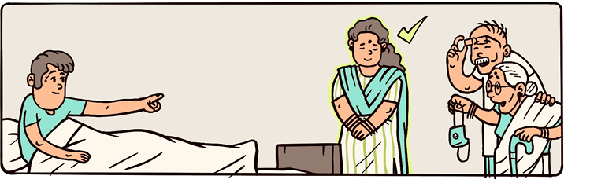
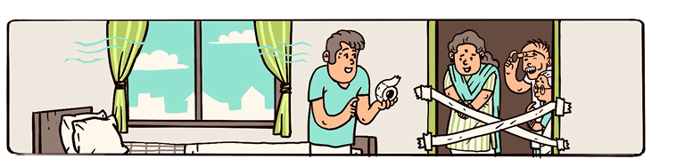
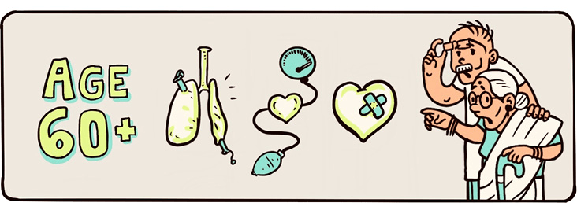
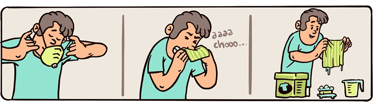
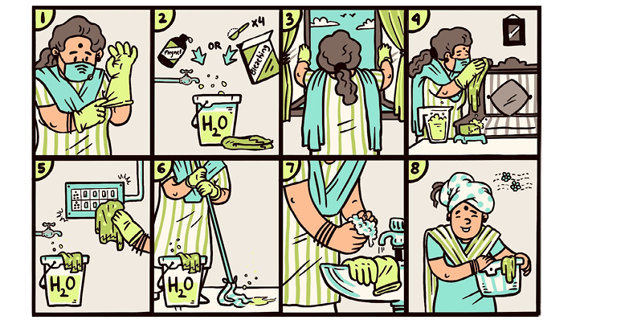
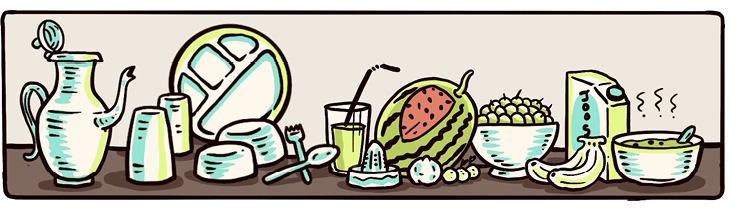
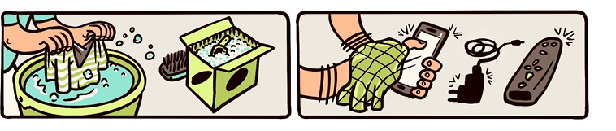
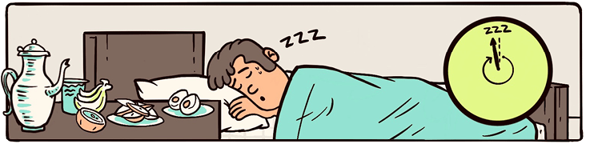
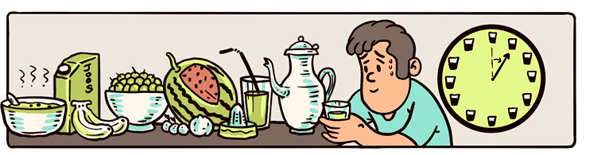
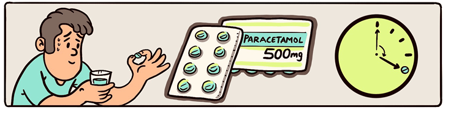
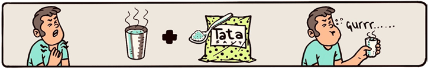
If patient’s throat is sore: Gargle with warm water (1/2 tsp salt in 1g/2 glass of water). Try cold packs to the outside of your throat to help ease the pain of swallowing. Humidification of the air you breathe (use vaporizer, pans of evaporating water, or steaming tub or shower) and lots of fluids help.
If patient’s temperature/fever is high: Fever medicine (such as Paracetamol or Crocin) should reduce temperature. Persistent temperature elevation of 103-104 degrees is a danger sign.
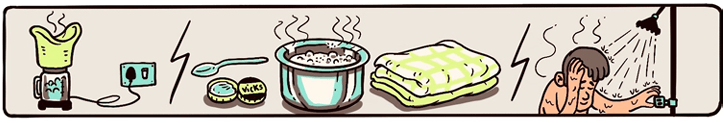
If patient feels nauseous and/or have diarrhea: Eat only clear liquids, soups, or juices as tolerated. Remember fluids are important to prevent dehydration.
How to identify it is getting serious and you should escalated to Local health provider asap:
If you notice the following :
If you notice the following :
This outbreak of COVID-19 may be stressful for your family. Fear and anxiety about a disease can be overwhelming and cause strong emotions in adults and children. Use these strategies to effectively cope with stress so you can focus on getting healthy again
You can discontinue home care treatment and isolation for the patient if all the following conditions are met :
1. At least 3 days (72 hours) have passed since full recovery
This means that the patient does not have fever without the use of fever-reducing medications (paracetamol)
2. Improvement in respiratory symptoms (e.g., cough, shortness of breath);
3. At least 7 days have passed since symptoms first appeared.
If you have tested negative for COVID-19, your doctor will advise you when you can end isolation.
Even after the patient has recovered, the patient should continue to :
1. Limit the contact with people and stay 6 feet away from people when outside the house
2. Wear a mask to cover the nose and mouth
Family members (including the caregiver) who never had symptoms will also need to self-isolate for 14 days from the day when the symptoms started for the patient.
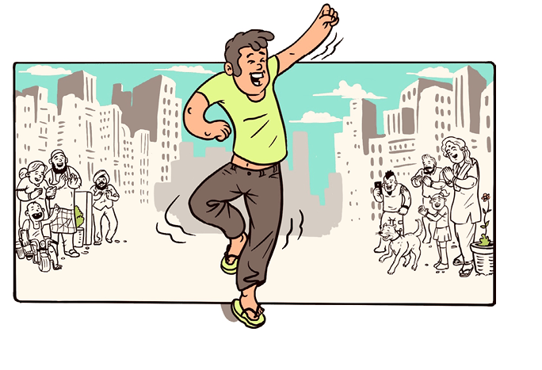
1. At least 3 days (72 hours) have passed since full recovery
This means that the patient does not have fever without the use of fever-reducing medications (paracetamol)
2. Improvement in respiratory symptoms (e.g., cough, shortness of breath);
3. At least 7 days have passed since symptoms first appeared.
If you have tested negative for COVID-19, your doctor will advise you when you can end isolation.
Even after the patient has recovered, the patient should continue to :
1. Limit the contact with people and stay 6 feet away from people when outside the house
2. Wear a mask to cover the nose and mouth
Family members (including the caregiver) who never had symptoms will also need to self-isolate for 14 days from the day when the symptoms started for the patient.
Two or more temperature readings greater than 103F-104F degrees despite fever medication for 2 days
Increasing difficulty in breathing
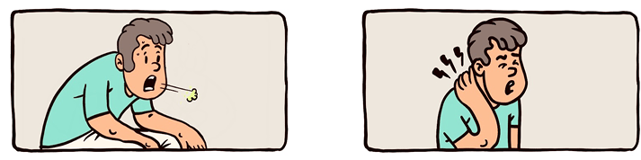
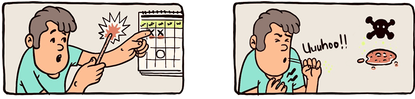
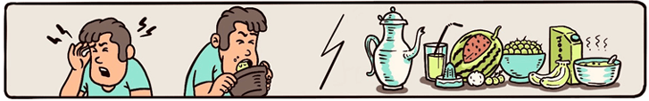
What to do for other symptoms?
Worsening of Symptoms
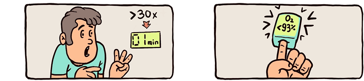
Bloody sputum or increasing chest pain
Stiff neck preventing bending neck and placing chin on chest
Patients breaths per minute get greater than 30 (Respiration Rate>30/min) (ref 12)
Take breaks from watching, reading, or listening to news stories, including social media. Hearing about the pandemic repeatedly can be upsetting.
Make time to unwind. Try to do some other activities you enjoy.
Take care of your body. Take deep breaths, stretch, or meditate. Try to eat healthy, well-balanced meals, exercise regularly, get plenty of sleep, and avoid alcohol and drugs.
Connect with others. Talk with people you trust about your concerns and how you are feeling.
(If Pulse oximeter present) Oxygen Saturation < 93% (ref 12)
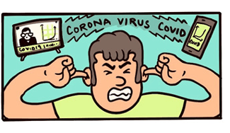
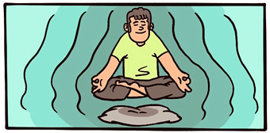